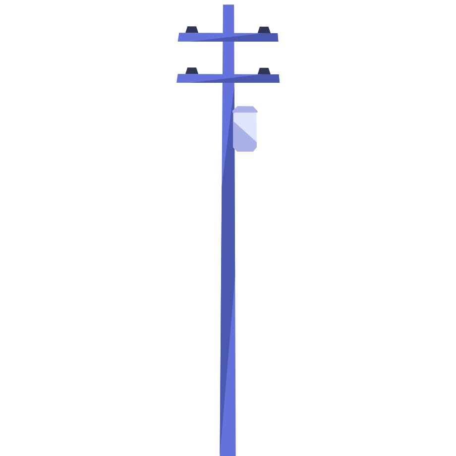

Trigonometry & Height n Distance
A
12 m
pole casts a shadow of
12√3 m
. What is the
angle of elevation
of the sun?
Q

Pole = 12 m
Shadow = 12√3 m
θ
Pole =
12 m
, shadow =
12√3 m
. Find the
angle of elevation
.
θ
Opposite = 12
Adjacent = 12√3
Given
Height
=
12 m
Shadow
=
12√3 m
Step 1
Opposite
side
=
12
Adjacent
side
=
12√3
Step 2
tan
θ
=
Opposite
Adjacent
=
12
12√3
=
1/√3
Step 3
tan θ = 1/√3
tan 30° = 1/√3
θ
=
30°
G
Height =
12 m
Shadow =
12√3 m
1
Opposite =
12
Adjacent =
12√3
2
tan θ =
Opposite/Adjacent
= 12/12√3 =
1/√3
3
tan 30° = 1/√3
θ =
30°
A
45 degrees
B
60 degrees
C
15 degrees
D
30 degrees